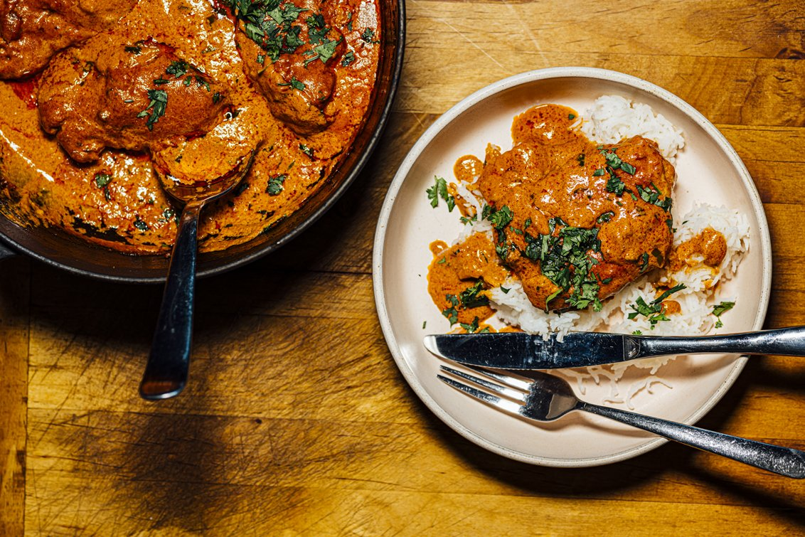

Butter Chicken recipe

Description
Butter chicken or murgh makhani is a dish, originating from the Indian subcontinent, of chicken in a mildly
spiced tomato sauce. The dish was created by the Moti Mahal restaurant in Delhi, India, and it is widely
believed to have been popularized in the 1950s.
Ingredients
- 2 tablespoons peanut oil, divided
- 1 shallot, finely chopped
- ¼ white onion, chopped
- 2 tablespoons butter
- 1 tablespoon ginger garlic paste
- 2 teaspoons lemon juice
- 2 teaspoons garam masala, divided
- 1 teaspoon chili powder
- 1 teaspoon ground cumin
- 1 bay leaf
- 1 cup tomato puree
- 1 cup half-and-half
- ¼ cup plain yogurt
- 1 pinch salt and ground black pepper to taste
- 1 pound boneless, skinless chicken thighs, cut into bite-size pieces
- ¼ teaspoon cayenne pepper, or to taste
- 1 tablespoon cornstarch
- ¼ cup water
Instructions
- Heat 1 tablespoon oil in a large saucepan over medium high heat. Saute shallot and onion until soft and
translucent. Stir in butter, lemon juice, 1 tablespoon garam masala, chili powder, cumin and bay leaf. Cook,
stirring, for 1 minute. Add tomato puree, and cook for 2 minutes, stirring frequently. Stir in half-and-half
and yogurt. Reduce heat to low, and simmer for 10 minutes, stirring frequently. Season with salt pepper.
Remove
from heat and set aside.
- Heat 1 tablespoon oil in a large heavy skillet over medium heat. Cook chicken until lightly browned, about
10
minutes. Reduce heat, and season with 1 teaspoon garam masala and cayenne. Stir in a few spoonfuls of sauce,
and simmer until liquid has reduced, and chicken is no longer pink. Stir cooked chicken into sauce.
- Mix together cornstarch and water, then stir into the sauce. Cook for 5 to 10 minutes, or until thickened.